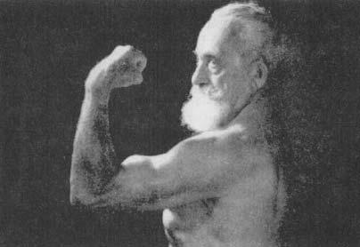
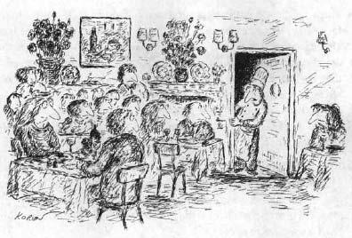
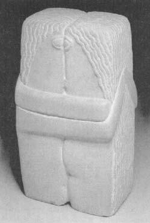

By now, if you are not depressed by all the bad news in the preceding chapters, you probably have only been skimming. Stress can wreak havoc with your metabolism, raise your blood pressure, burst your white blood cells, make you flatulent, ruin your sex life, and if that’s not enough, possibly damage your brain.* Why don’t we throw in the towel right now?
By now, if you are not depressed by all the bad news in the preceding chapters, you probably have only been skimming. Stress can wreak havoc with your metabolism, raise your blood pressure, burst your white blood cells, make you flatulent, ruin your sex life, and if that’s not enough, possibly damage your brain.* Why don’t we throw in the towel right now?
There is hope. Although it may sneak onto the scene in a quiet, subtle way, it is there. This frequently hits me at gerontology conferences. I’m sitting there, listening to the umpteenth lecture with the same general tone—the kidney expert speaking about how that organ disintegrates with age, the immunology expert on how immunity declines, and so on. There is always a bar graph set to 100 percent of Something Or Other for young subjects, with a bar showing that the elderly have only 75 percent of the kidney-related Something Or Other of young subjects, 63 percent of the muscle-related Something Or Other, and so on.
Now, there’s a critical feature to those bar graphs. Research typically involves the study of populations, rather than single individuals one at a time. All those individuals never have the exact same level of Something Or Other—instead, the bars in a graph represent the average for each age graph in chapter 18. Suppose one group of three subjects has scores of 19, 20, and 21, for an average of 20. Another group may have scores of 10, 20, and 30. They also have an average score of 20, but the variability of those scores would be much larger. By the convention of science, the bars also contain a measure of how much variability there is within each age group: the size of the “T” above the bar indicates what percentage of the subjects in the group had scores within X distance of the average.
Henri Matisse, The Dance, oil on canvas, 1910.
One thing that is utterly reliable is that the amount of variability increases with age—the conditions of the elderly are always much more variable than those of the young subjects. What a drag, you say as a researcher, because with that variance your statistics are not as neat and you have to include more subjects in your aged population to get a reliable average. But really think about that fact for a minute. Look at the size of the bars for the young and old subjects, look at the size of the T-shaped variance symbols, do some quick calculations, and suddenly the extraordinary realization hits you—to generate a bar with that large of a variance term, amid the population of, say, fifty subjects, there have to be six subjects where Something Or Other is improving with age. Their kidney filtration rates have gotten better, their blood pressures have decreased, they do better on memory tests. Suddenly you’re not sitting there semi-bored in the conference, waiting for the break to grab some of those unhealthy cinnamon buns. You’re on the edge of your seat. Who are those six? What are they doing right? And with all scientific detachment abandoned, how can I do that, too?
Schematic presentation of the fact that a group of young and old individuals may receive the same average score on a given test, yet the variability in the scores is typically greater among the older populations.
This pattern used to be a statistical irritant to gerontologists. Now it’s the trendiest subject in the field: “successful aging.” Not everyone falls apart miserably with age, not every organ system poops out, not everything is bad news.
The same pattern occurs in many other realms in which life tests us. Ten men are released from years spent as political hostages. Nine come out troubled, estranged from friends and family, with nightmares, difficulties readapting to everyday life; some of those nine will never function well again. Yet invariably there is one guy who comes out saying, “Yeah, the beatings were awful, the times they put a gun to my head and cocked the trigger were the worst in my life, of course I would never want to do it again, but it wasn’t until I was in captivity that I realized what is really important, that I decided to devote the rest of my life to X. I’m almost grateful.” How did he do it? What explains the extraordinarily rare Holocaust survivor who came out nearly as mentally healthy as when she went in?
Consider the physiological studies of people carrying out dangerous, stressful tasks—parachuting, learning to land on an aircraft carrier in choppy seas, carrying out underwater demolition. The studies show the same pattern: most people have massive stress-responses and a subset are physiologically unflustered.
And then there’s that hair-raising, push the envelope, unpredictable world of supermarket lines. You’ve picked the slow one, and your simmering irritation is made worse by the person behind you who looks perfectly happy standing there, daydreaming.
Despite the endless ways in which stress can disrupt, we do not all collapse into puddles of stress-related disease and psychiatric dysfunction. Of course, we are not all exposed to identical external stressors; but given the same stressors, even the same major stressors, we vary tremendously in how our bodies and psyches cope. This final chapter asks the questions born of hope. Who makes up that subset that can cope? How do they do it? And how can we? Chapter 15 suggested that some personalities and temperaments aren’t well suited to dealing with stress, and it is easy to imagine the opposite case that some are. That’s true, but this chapter shows that having the “right” personality doesn’t explain all successful coping—there’s even hope for the rest of us.
We begin by more systematically examining cases of individuals who just happen to be fabulous at dealing with stress.
Tales from the Trenches: Some Folks
Who are Amazing at Dealing with Stress
Successful Aging
Probably the best place to start is with successful aging, a subject that was covered at length in chapter 12. Amid a lot of good news in that chapter, one particularly bleak set of findings had to do with glucocorticoids. Old rats, recall, secrete too much of these hormones—they have elevated levels during basal, non-stressful situations and difficulty shutting off secretion at the end of stress. I discussed the evidence that this could arise from damage to the hippocampus, the part of the brain that (in addition to playing a role in learning and memory) helps inhibit glucocorticoid secretion. Then, to complete the distressing story, it was revealed that glucocorticoids could hasten the death of hippocampal neurons. Furthermore, the tendency of glucocorticoids to damage the hippocampus increases the oversecretion of glucocorticoids, which in turn leads to more hippocampal damage, more glucocorticoids, spiraling downward.
I proposed that “feed forward cascade” model around twenty years ago. It seemed to describe a basic and inevitable feature of aging in the rat, one that seemed important (at least from my provincial perspective, having just spent eighty hours a week studying it in graduate school). I was pretty proud of myself. Then an old friend, Michael Meaney of McGill University, did an experiment that deflated that grandiosity.
Meaney and colleagues studied that cascade in old rats. But they did something clever first. Before starting the studies, they tested the memory capacity of the rats. As is usual, on the average these old rats had memory problems, compared with young controls. But as usual, a subset were doing just fine, with no memory impairment whatsoever. Meaney and crew split the group of old rats into the impaired and the unimpaired. The latter turned out to show no evidence at all of that degenerative feed forward cascade. They had normal glucocorticoid levels basally and after stress. Their hippocampi had not lost neurons or lost receptors for glucocorticoids. All those awful degenerative features turned out not to be an inevitable part of the aging process. All those rats had to do was age successfully.
What was this subset of rats doing right? Oddly, it might have had something to do with their childhoods. If a rat is handled during the first few weeks of its life, it secretes less glucocorticoids as an adult. This generated a syllogism: if neonatal handling decreases the amount of glucocorticoids secreted as an adult, and such secretion in an adult influences the rate of hippocampal degeneration in old age, then handling a rat in the first few weeks of its life should alter the way it ages years later. Meaney’s lab and I teamed up to test this and found exactly that. Do nothing more dramatic than pick a rat up and handle it fifteen minutes a day for the first few weeks of its life, put it back in its cage with the unhandled controls, come back two years later…and the handled rat is spared the entire feed forward cascade of hippocampal damage, memory loss, and elevated glucocorticoid levels.
Real rats in the real world don’t get handled by graduate students. Is there a natural world equivalent of “neonatal handling” in the laboratory? Meaney went on to show that rat mothers who spend more time licking and grooming their pups in those critical first few weeks induce the same handling phenomenon. It seems particularly pleasing that this grim cascade of stress-related degeneration in old age can be derailed by subtle mothering years earlier. No doubt there are other genetic and experiential factors that bias a rat toward successful or unsuccessful aging, a subject that Meaney still pursues. Of greatest importance for our purposes now, however, is simply that this degeneration is not inevitable.
If the fates of inbred laboratory rats are this variable, how humans fare is likely to be even more diverse. Which humans age successfully? To review some of the material in chapter 12, plain old aging itself is more successful than many would guess. Levels of self-assessed contentment do not decline with age. While social networks decrease in size, they don’t decline in quality. In the United States, the average eighty-five-year-old spends little time in an institution (a year and a half for women; half a year for men). The average person in that age range, taking three to eight medications a day, nevertheless typically categorizes herself as healthy. And another very good thing: despite the inherent mathematical impossibility, the average aged person considers herself to be healthier and better off than the average aged person.
Amid that good news, who are the people who age particularly successfully? As we saw in the last chapter, one factor is making sure you pick parents who were not poor. But there are other factors as well. The psychiatrist George Vaillant has been looking at this for years, beginning with his famous Harvard aging study. In 1941, a Harvard dean picked out a couple of hundred undergraduates (all male back then, naturally), who would be studied for the rest of their lives. For starters, at age sixty-five, these men had half the mortality rate of the rest of their Harvard peers, already a successfully aging crowd. Who were the students picked by that dean? Students whom he considered to be “sound.” Oh hell, you’re thinking—I’m a fifty-year-old woman trying to figure out how to age successfully and the prescription is to act in a way so that a 1940s Boston Brahmin with a pipe and tweed jacket would consider me to be a sound twenty-year-old fellow?
Fortunately, Vaillant’s research gives us more to work with than that. Among this population, which subset has had the greatest health, contentment, and longevity in old age? A subset with an array of traits, apparent before age fifty: no smoking, minimal alcohol use, lots of exercise, normal body weight, absence of depression, a warm, stable marriage, and a mature, resilient coping style (which seems built around extroversion, social connectiveness, and low neuroticism). Of course, none of this tells you where someone gets the capacity for a mature resilient coping style, or the social means to have a stable marriage. Nor does it control for the possibility that men who, for example, have been drinking excessively have done so because they’ve had to deal with more than their share of miserable stressors. Despite those confounds, findings like these have emerged from other studies, and with more representative populations than Harvard graduates.

Joseph Greenstein, “The Mighty Atom,” in old age. An idol of my youth, Greenstein was still performing his feats of strength in Madison Square Garden as an octogenarian. He attributed it to clean, vegetarian living.
Another literature shows the tremendous gerontological benefits of being respected and needed in old age. This has been shown in many settings, but is best appreciated with our society’s equivalents of village elders—the dramatically successful aging of Supreme Court justices and conductors. It certainly fits with everything we learned about in chapter 13—you’re eighty-five, and you get to influence your nation’s laws for a century to come, or spend your days aerobically exercising by waving your baton about and determining whether a whole orchestra full of adults gets a potty break before or after another run through Wagner’s Ring Cycle.*
The study of successful aging is a young field, and some mammoth longitudinal studies are under way that will produce a treasure trove of data, not only about what traits predict successful aging, but where those traits come from. In the meantime, though, the point for this chapter is to see that there are lots of folks out there who successfully navigate one of the most stressful passages of life.
Coping with Catastrophic Illness
In the early 1960s, when scientists were just beginning to investigate whether psychological stress triggers the same hormonal changes that physical stressors do, a group of psychiatrists conducted what has become a classic study. It concerned the parents of children dying of cancer and the high glucocorticoid levels that those parents secreted. There was great variance in this measure—some of the parents secreted immense quantities of glucocorticoids; others were in the normal range. The investigators, in in-depth psychiatric interviews, explored which parents were holding up best to this horrible stressor, and identified a number of coping styles associated with lower glucocorticoid levels.
One important variable was the ability of parents to displace a major worry onto something less threatening. A father has been standing vigil by his sick child for weeks. It’s clear to everyone that he needs to get away for a few days, to gain some distance, as he is near a breaking point. Plans are made for him to leave, and just before he does, he is feeling great anxiety. Why? At one extreme is the parent who says, “I’ve seen how rapidly medical crises can develop at this stage. What if my daughter suddenly gets very sick and dies while I am away? What if she dies without me?” At the other extreme is the parent who can repackage the anxiety into something more manageable—“Well, I’m just worried that she’ll be lonely without me, that the nurses won’t have time to read her favorite stories.” The latter style was associated with lower glucocorticoid levels.
A second variable had to do with denial. When a child went into remission, which frequently happened, did the parent look at him and say to the doctor, “It’s over with, there’s nothing to worry about, we don’t even want to hear the word ‘remission,’ he’s going to be fine”? Or did she peer anxiously at the child, wondering if every cough, every pain, every instant of fatigue was a sign that the disease had returned? During periods of remission, parents who denied that relapse and death were likely and instead focused on the seemingly healthy moment had lower glucocorticoid levels (as we will see shortly, this facet of the study had a very different postscript).
A final variable was whether the parent had a structure of religious rationalization to explain the illness. At one extreme was the parent who, while obviously profoundly distressed by her child’s cancer, was deeply religious and perceived the cancer to be God’s test of her family. She even reported something resembling an increase in her self-esteem: “God does not choose just anyone for a task like this; He chose us because He knew we were special and could handle this.” At the other extreme was the parent who said, in effect, “Don’t tell me that God works in mysterious ways. In fact, I don’t want to hear about God.” The researchers found that if you can look at your child having cancer and decide that God is choosing you for this special task, you are likely to have less of a stress-response (the larger issue of religious belief and health will be considered shortly).
Differences in Vulnerability to Learned Helplessness
In chapter 14, I described the learned helplessness model and its relevance to depression. I emphasized how generalized the model appears to be: animals of many different species show some version of giving up on life in the face of something aversive and out of their control.
Yet when you look at research papers about learned helplessness, there is the usual—bar graphs with T-shaped variance bars indicating large differences in response. For example, of the laboratory dogs put through one learned helplessness paradigm, about one-third wind up being resistant to the phenomenon. This is the same idea as the one out of ten hostages who comes out of captivity a mentally healthier person than when he went in. Some folks and some animals are much more resistant to learned helplessness than average. Who are the lucky ones?
Why are some dogs relatively resistant to learned helplessness? An important clue: dogs born and raised in laboratories, bred only for research purposes, are more likely to succumb to learned helplessness than those who have come to the lab by way of the pound. Martin Seligman offers this explanation: if a dog has been out in the real world, experiencing life and fending for itself (as the dogs who wind up in a pound are likely to have done), it has learned about how many controllable things there are in life. When the experience with an uncontrollable stressor occurs, the dog, in effect, is more likely to conclude that “this is awful, but it isn’t the entire world.” It resists globalizing the stressor into learned helplessness. In a similar vein, humans with more of an internalized locus of control—the perception that they are the masters of their own destiny—are more resistant in experimental models of learned helplessness.
More Stress Management Lessons from the Baboons
Chapters 15 and 17 introduced social primates, and some critical variables that shaped social success for them: dominance rank, the society in which rank occurs, the personal experience of both, and perhaps most important, the role played by personality. In their Machiavellian world, we saw there is more to social success and health for a male than just a lot of muscle or some big sharp canines. Just as important are social and political skills, the ability to build coalitions, and the ability to walk away from provocations. The personality traits associated with low glucocorticoid levels certainly made sense in the context of effective handling of psychological stressors—the abilities to differentiate threatening from neutral interactions with rivals, to exert some control over social conflicts, to differentiate good news from bad, to displace frustration. And, above all else, the ability to make social connections—grooming, being groomed, playing with infants. So how do these variables play out over time, as these animals age?
Baboons are long-lived animals, sticking around the savanna for anywhere from fifteen to twenty-five years. Which means you don’t get to follow an animal from its first awkward bloom of puberty into old age very readily. Twenty-five years into this project, I’m just beginning to get a sense of the life histories of some of these animals, and the development of their individual differences.
As a first finding, males with the “low glucocorticoid” personalities were likely to remain in the high-ranking cohort significantly longer than rank-matched males with high glucocorticoid profiles. About three times longer. Among other things, that probably means that the low-glucocorticoid guys are outreproducing the other team. From the standpoint of evolution—passing on copies of your genes, all that jazz—this is a big difference. It suggests that if you were to go away for a couple of zillion millennia, allow that differential selection to play out, and then return to finish your doctoral dissertation, your average baboon would be a descendent of these low-glucocorticoid guys, and the baboon social world would involve a lot of impulse control and gratification postponement. Maybe even toilet training.
And what about the old ages of these individual baboons that are alive today? The most dramatic difference I’ve uncovered concerns the variable of social affiliation. Your average male baboon has a pretty lousy old age, once he’s gotten a paunch and some worn canines and dropped down to the cellar of the hierarchy. Look at the typical pattern of dominance interactions among the males. Usually, Number 3 in the hierarchy is having most of his interactions with Numbers 2 and 4, while Number 15 is mostly concerned with 14 and 16 (except, of course, when 3 is having a bad day and needs to displace aggression on someone way down). Most interactions then usually occur between animals of adjacent ranks. However, amid that pattern, you’ll note that the top-ranking half-dozen or so animals, nevertheless, are spending a lot of time subjecting poor Number 17 to a lot of humiliating dominance displays, displacing him from whatever he is eating, making him get up whenever he settles into a nice shady spot, just generally giving him a hard time. What’s that about? Number 17 turns out to have been very high-ranking back when the current dominant animals were terrified adolescents. They remember, and can’t believe they can make this decrepit ex-king grovel anytime they feel like it.
So as he ages, your average male baboon gets a lot of grief from the current generation of thugs, and this often leads to a particularly painful way of passing your golden years—the treatment gets so bad that the male picks up and transfers to a different troop. That’s a stressful, hazardous journey, with an extremely high mortality rate for even a prime-aged animal—moving across novel terrain, chancing predators on your own. All that to wind up in a new troop, subject to an extreme version of that too-frequently-true truism about primate old age; namely, aging is a time of life spent among strangers. Clearly, for a baboon in that position, being low-ranking, aged, and ignored among strangers is better than being low-ranking, aged, and remembered by a vengeful generation.
But what about males who, in their prime, had a low-glucocorticoid personality, spending lots of time affiliated with females, grooming, sitting in contact, playing with kids? They just keep doing the same thing. They get hassled by the current rulers, but it doesn’t seem to count as much as the social connectedness to these baboons. They don’t transfer troops, and continue the same pattern of grooming and socialization for the rest of their lives. That seems like a pretty good definition of successful aging for any primate.
Applying Principles of Dealing with
Psychological Stress: Some Success Stories
Parents somehow shouldering the burden of their child’s fatal illness, a low-ranking baboon who has a network of friends, a dog resisting learned helplessness—these are striking examples of individuals who, faced with a less than ideal situation, nevertheless excel at coping. That’s great, but what if you don’t already happen to be that sort of individual? When it comes to rats that wish to age successfully, the useful bit of advice a previous section generates is to make sure you pick the right sort of infancy. When it comes to humans who wish to cope with stress and achieve successful aging, you should be sure to pick the right parents’ genes, and the right parents’ socioeconomic status as well. The other cases of successfully coping with stress may not be any more encouraging to the rest of us. What if we happen not to be the sort of baboon who looks at the bright side, the person who holds on to hope when others become hopeless, the parent of the child with cancer who somehow psychologically manages the unmanageable? There are many stories of individuals who have supreme gifts of coping. For us ungifted ones, are there ways to change the world around us and to alter our perceptions of it so that psychological stress becomes at least a bit less stressful?
The rest of the chapter is devoted to ways in which to change our coping styles. But a first thing to emphasize is that we can change the way we cope, both physiologically and psychologically. As the most obvious example, physical conditioning brought about by regular exercise will lower blood pressure and resting heart rate and increase lung capacity, just to mention a few of its effects. Among Type-A people, psychotherapy can change not only behaviors but also cholesterol profiles, risk of heart attack, and risk of dying, independent of changes in diet or other physiological regulators of cholesterol. As another example, the pain and stressfulness of childbirth can be modulated by relaxation techniques such as Lamaze.*
Sheer repetition of certain activities can change the connection between your behavior and activation of your stress-response. In one classic study discussed earlier, Norwegian soldiers learning to parachute were examined over the course of months of training. At the time of their first jump, they were all terrified; they felt like vats of Jell-O, and their bodies reflected it. Glucocorticoids and epinephrine levels were elevated, testosterone levels were suppressed—all for hours before and after the jump. As they repeated the experience, mastered it, stopped being terrified, their hormone secretion patterns changed. By the end of training they were no longer turning on their stress-response hours before and after the jump, only at the actual time. They were able to confine their stress-response to an appropriate moment, when there was a physical stressor; the entire psychological component of the stress-response had been habituated away.
All of these examples show that the workings of the stress-response can change over time. We grow, learn, adapt, get bored, develop an interest, drift apart, mature, harden, forget. We are malleable beasts. What are the buttons we can use to manipulate the system in a way that will benefit us?
The issues raised in the chapter on the psychology of stress are obviously critical: control, predictability, social support, outlets for frustration. Seligman and colleagues, for example, have reported some laboratory success in buffering people from learned helplessness when confronted with an unsolvable task—if subjects are first given “empowering” exercises (various tasks that they can readily master and control). But this is a fairly artificial setting. Some classic studies have manipulated similar psychological variables in the real world, even some of the grimmest parts of the real world. Here are two examples with startling results.
Self-Medication and
Chronic Pain Syndromes
Whenever something painful happens to me, amid all the distress I am surprised at being reminded of how painful pain is. That thought is always followed by another, “What if I hurt like this all the time?” Chronic pain syndromes are extraordinarily debilitating. Diabetic neuropathies, crushed spinal nerve roots, severe burns, recovery after surgery can all be immensely painful. This poses a medical problem, insofar as it is often difficult to give enough drugs to control the pain without causing addiction or putting the person in danger of an overdose. As any nurse will attest, this also poses a management problem, as the chronic pain patient spends half the day hitting the call button, wanting to know when his next painkiller is coming, and the nurse has to spend half the day explaining that it is not yet time. A memory that will always make me shudder: at one point, my father was hospitalized for something. In the room next door was an elderly man who, seemingly around the clock, every thirty seconds, would plaintively shout in a heavy Yiddish accent, “Nurse. Nurse! It hurts. It hurts! Nurse!” The first day it was horrifying. The second day it was irritating. By the third day, it had all the impact of the rhythmic chirping of crickets.
Awhile back some researchers got an utterly mad idea, the thought of frothing lunatics. Why not give the painkillers to the patients and let them decide when they need medication? You can just imagine the apoplexy that mainstream medicine had over that one—patients will overdose, become addicts, you can’t let patients do that. It was tried with cancer patients and postsurgical patients, and it turned out that the patients did just fine when they self-medicated. In fact, the total amount of painkillers consumed decreased.
Why should consumption go down? Because when you are lying there in bed, in pain, uncertain of the time, uncertain if the nurse has heard your call or will have time to respond, uncertain of everything, you are asking for painkillers not only to stop the pain but also to stop the uncertainty. Reinstitute control and predictability, give the patient the knowledge that the medication is there for the instant that the pain becomes too severe, and the pain often becomes far more manageable.
Increasing Control in Nursing Homes
I can imagine few settings that better reveal the nature of psychological stress than a nursing home. Under the best of circumstances, the elderly tend to have a less active, less assertive coping style than young people. When confronted by stressors, the latter are more likely to try to confront and solve the problem, while the former are more likely to distance themselves from the stressor or adjust their attitude toward it. The nursing home setting worsens these tendencies toward withdrawal and passivity: it’s a world in which you are often isolated from the social support network of a lifetime and in which you have little control over your daily activities, your finances, often your own body. A world of few outlets for frustration, in which you are often treated like a child—“infantilized.” Your easiest prediction is “life will get worse.”
A number of psychologists have ventured into this world to try to apply some of the ideas about control and self-efficacy outlined in chapter 13. In one study, for example, residents of a nursing home were given more responsibility for everyday decision making. They were made responsible for choosing their meals for the next day, signing up in advance for social activities, picking out and caring for a plant for their room, instead of having one placed there and cared for by the nurses (“Oh, here, I’ll water that, dear; why don’t you just get back into bed?”). People became more active—initiating more social interactions—and described themselves in questionnaires as happier. Their health improved, as rated by doctors unaware of whether they were in the increased-responsibility group or the control group. Most remarkable of all, the death rate in the former group was half that of the latter.
In other studies, different variables of control were manipulated. Almost unanimously, these studies show that a moderate increase in control produces all the salutary effects just described; in a few studies, physiological measures were even taken, showing changes like reductions in glucocorticoid levels or improved immune function. The forms that increased control could take were many. In one study, the baseline group was left alone, while the experimental group was organized into a residents’ council that made decisions about life in the nursing home. In the latter group, health improved and individuals showed more voluntary participation in social activities. In another study, residents in a nursing home were being involuntarily moved to a different residence because of the financial collapse of the first institution. The baseline group was moved in the normal manner, while the experimental group was given extensive lectures on the new home and given control of a wide variety of issues connected with the move (the day of the move, the decor of the room they would live in, and so on). When the move occurred, there were far fewer medical complications for the latter group. The infantilizing effects of loss of control were shown explicitly in another study in which residents were given a variety of tasks to do. When the staff present encouraged them, performance improved; when the staff present helped them, performance declined.
Another example of these principles: this study concerned visits by college students to people in nursing homes. One nursing-home group, the baseline group, received no student visitors. In a second group, students would arrive at unpredictable times to chat. There were various improvements in functioning and health in this group, testifying to the positive effects of increased social contact. In the third and fourth groups, control and predictability were introduced—in the third group, the residents could decide when the visit occurred, whereas in the fourth they could not control it, but at least were told when the visit would take place. Functioning and health improved even more in both of those groups, compared with the second. Control and predictability help, even in settings where you think it won’t make a dent in someone’s unhappiness.
Stress Management:
Reading the Label Carefully
These studies generate some simple answers to coping with stress that are far from simple to implement in everyday life. They emphasize the importance of manipulating feelings of control, predictability, outlets for frustration, social connectedness, and the perception of whether things are worsening or improving. In effect, the nursing home and pain studies are encouraging dispatches from the front lines in this war of coping. Their simple, empowering, liberating message: if manipulating such psychological variables can work in these trying circumstances, it certainly should for the more trivial psychological stressors that fill our daily lives.
This is the message that fills stress management seminars, therapy sessions, and the many books on the topic. Uniformly, they emphasize finding means to gain at least some degree of control in difficult situations, viewing bad situations as discrete events rather than permanent or pervasive ones, finding appropriate outlets for frustration and means of social support and solace in difficult times.
That’s great. But it is vital to realize that the story is not that simple. It is critical that one not walk away with the conclusion that in order to manage and minimize psychological stressors, the solution is always to have more of a sense of control, more predictability, more outlets, more social affiliation. These principles of stress management work only in certain circumstances. And only for certain types of people with certain types of problems.
I was reminded of this awhile back. Thanks to this book’s having transformed me from being a supposed expert about rats’ neurons to being a supposed one about human stress, I was talking to a magazine writer about the subject. She wrote for a women’s magazine, the type with articles about how to maintain that full satisfying sex life while being the CEO of a Fortune 500 company. We were talking about stress and stress management, and I was giving an outline of some of the ideas in the chapter on psychological stress. All was going well, and toward the end, the writer asked me a personal question to include in the article—what are my outlets for dealing with stress. I made the mistake of answering honestly—I love my work, I try to exercise daily, and I have a fabulous marriage. Suddenly, this hard-nosed New York writer blew up at me—“I can’t write about your wonderful marriage! Don’t tell me about your wonderful marriage! Do you know who my readers are? They’re forty-five-year-old professionals who are unlikely to ever get married and want to be told how great that is!” It struck me that she was, perhaps, in this category as well. It also struck me, as I slunk back to my rats and test tubes afterward, what an idiot I had been. You don’t counsel war refugees to watch out about too much cholesterol or saturated fats in their diet. You don’t tell an overwhelmed single mother living in some inner-city hellhole about the stress-reducing effects of a daily hobby. And you sure don’t tell the readership of a magazine like this how swell it is to have a soul mate for life. “More control, more predictability, more outlets, more social support” is not some sort of mantra to be handed out indiscriminately, along with a smile button.
This lesson is taught with enormous power by two studies that we have already heard about, which seem superficially to be success stories in stress management but turned out not to be. Back to the parents of children with cancer who were in remission. Eventually, all the children came out of remission and died. When that occurred, how did the parents fare? There were those who all along had accepted the possibility, even probability, of a relapse, and there were those who staunchly denied the possibility. As noted, during the period of remission the latter parents tended to be the low glucocorticoid secretors. But when their illusions were shattered and the disease returned, they had the largest increases in glucocorticoid concentrations.
An equally poignant version of this unfortunate ending comes from a nursing home study. Recall the one in which residents were visited once a week by students—either unannounced, at an appointed time predetermined by the student, or at a time of the resident’s choice. As noted, the sociality did everyone some good, but the people in the last two groups, with the increased predictability and control, did even better. Wonderful, end of study, celebration, everyone delighted with the clear-cut and positive results, papers to be published, lectures to be given. Student participants visit the people in the nursing home for a last time, offer an awkward, “You know that the study is over now, I, er, won’t be coming back again, but, um, it’s been great getting to know you.” What happens then? Do the people whose functioning, happiness, and health improved now decline back to pre-experiment levels? No. They drop even further, winding up worse than before the study.
This makes perfect sense. Think of how it is to get twenty-five shocks an hour when yesterday you got ten. Think of what it feels like to have your child come out of remission after you spent the last year denying the possibility that it could ever happen. And think about those nursing home residents: it is one thing to be in a nursing home, lonely, isolated, visited once a month by your bored children. It is even worse to be in that situation and, having had a chance to spend time with bright, eager young people who seemed interested in you, to find now they aren’t coming anymore. All but the most heroically strong among us would slip another step lower in the face of this loss. It is true that hope, no matter how irrational, can sustain us in the darkest of times. But nothing can break us more effectively than hope given and then taken away capriciously. Manipulating these psychological variables is a powerful but double-edged sword.
When do these principles of injecting a sense of control, of predictability, of outlets, of sociality, work and when are they disastrous to apply? There are some rules. Let’s look at some specific stress management approaches and when they work, keeping those rules in mind.
Exercise
I start with exercise because this is the stress reduction approach I rely on frequently, and I’m deeply hoping that putting it first will mean that I’ll live to be very old and healthy.
Exercise is great to counter stress for a number of reasons. First, it decreases your risk of various metabolic and cardiovascular diseases, and therefore decreases the opportunity for stress to worsen those diseases.
Next, exercise generally makes you feel good. There’s a confound in this, in that most people who do a lot of exercise, particularly in the form of competitive athletics, have unneurotic, extroverted, optimistic personalities to begin with (marathon runners are exceptions to this). However, do a properly controlled study, even with neurotic introverts, and exercise improves mood. This probably has something to do with exercise causing the secretion of beta-endorphin. In addition, there’s the sense of self-efficacy and achievement, that good stuff you try to recall when your thigh muscles are killing you in the middle of the aerobics class. And most of all, the stress-response is about preparing your body for a sudden explosion of muscular activity. You reduce tension if you actually turn on the stress-response for that purpose, instead of merely stewing in the middle of some time-wasting meeting.
Finally, there’s some evidence that exercise makes for a smaller stress-response to various psychological stressors.
That’s great. Now for some qualifiers:
-
- Exercise enhances mood and blunts the stress-response only for a few hours to a day after the exercise session.
-
- Exercise is stress reducing so long as it is something you actually want to do. Let rats voluntarily run in a running wheel and their health improves in all sorts of ways. Force them to, even while playing great dance music, and their health worsens.
-
- The studies are quite clear that aerobic exercise is better than anaerobic exercise for health (aerobic exercise is the sustained type that, while you’re doing it, doesn’t leave you so out of breath that you can’t talk).
-
- Exercise needs to occur on a regular basis and for a sustained period. While whole careers are consumed figuring out exactly what schedule of aerobic exercise works best (how often, for how long), it’s pretty clear that you need to exercise a minimum of twenty or thirty minutes at a time, a few times a week, to really get the health benefits.
-
- Don’t overdo it. Remember the lessons of chapter 7—too much can be at least as bad as too little.
-
Meditation
When done on a regular, sustained basis (that is to say, something close to daily, for fifteen, thirty minutes at a time), meditation seems to be pretty good for your health, decreasing glucocorticoid levels, sympathetic tone, and all the bad stuff that too much of either can cause. Now the caveats:
First, the studies are clear in showing physiological benefits while someone is meditating. It’s less clear that those good effects (for example, lowering blood pressure) persist for long afterward.
Next, when the good effects of meditation do persist, there may be a subject bias going. Suppose you want to study the effects of meditation on blood pressure. What do you do? You randomly assign some people to the control group, making sure they never meditate, and some to the group that now meditate an hour a day. But in most studies, there isn’t random assignment. In other words, you study blood pressure in people who have already chosen to be regular meditators, and compare them to non-meditators. It’s not random who chooses to meditate—maybe the physiological traits were there before they started meditating. Maybe those traits even had something to do with their choosing to meditate. Some good studies have avoided this confound, but most have not.
Finally, there are lots of different types of meditation. Don’t trust anyone who says that their special brand has been proven scientifically to be better for your health than the other flavors. Watch your wallet.
Get More Control, More Predictability in your Life…Maybe
More predictive information about impending stressors can be very stress-reducing. But not always. As noted in chapter 13, it does little good to get predictive information about common events (because these are basically inevitable) or ones we know to be rare (because you weren’t anxious about them in the first place). It does little good to get predictive information a few seconds before something bad happens (because there isn’t time to derive the psychological advantages of being able to relax a bit) or way in advance of the event (because who’s worrying anyway?).
In some situations, predictive information can even make things worse—for example, when the information tells you little. This turfs us back to our post-9/11 world of “Go about your normal business but be extra careful”—Orange Alerts.
An overabundance of information can be stressful as well. One of the places I dreaded most in graduate school was the “new journal desk” in the library, where all the science journals received the previous week were displayed, thousands of pages of them. Everyone would circle around it, teetering on the edge of panic attacks. All that available information seemed to taunt us with how out of control we felt—stupid, left behind, out of touch, and overwhelmed.
Manipulating a sense of control is playing with the variable in psychological stress that is most likely to be double-edged. Too much of a sense of control can be crippling, whether the sense is accurate or not. An example:
When he was a medical student, a friend embarked on his surgery rotation. That first day, nervous, with no idea what to expect, he went to his assigned operating room and stood at the back of a crowd of doctors and nurses doing a kidney transplant. Hours into it, the chief surgeon suddenly turned to him: “Ah, you’re the new medical student; good, come here, grab this retractor, hold it right here, steady, good boy.” Surgery continued; my friend was ignored as he precariously maintained the uncomfortable position the surgeon had put him in, leaning forward at an angle, one arm thrust amid the crowd, holding the instrument, unable to see what was going on. Hours passed. He grew woozy, faint from the tension of holding still. He found himself teetering, eyes beginning to close—when the surgeon loomed before him. “Don’t move a muscle because you’re going to screw up EVERYTHING!” Galvanized, panicked, half-ill, he barely held on…only to discover that the “you’re going to screw up everything” scenario was a stupid hazing trick done to every new med student. He had been holding an instrument over some irrelevant part of the body the entire time, fooled into feeling utterly responsible for the survival of the patient. (P.S.: He chose another medical specialty.)
As another example, recall the discussion in chapter 8 on how tenuous a link there is between stress and cancer. It is clearly a travesty to lead cancer patients or their families to believe, misinterpreting the power of the few positive studies in this field, that there is more possibility for control over the causes and courses of cancers than actually exists. Doing so is simply teaching the victims of cancer and their families that the disease is their own fault, which is neither true nor conducive to reducing stress in an already stressful situation.
So control is not always a good thing psychologically, and a principle of good stress management cannot be simply to increase the perceived amount of control in one’s life. It depends on what that perception implies, as we saw in chapter 13. Is it stress-reducing to feel a sense of control when something bad happens? If you think, “Whew, that was bad, but imagine how much worse it would have been if I hadn’t been in charge,” a sense of control is clearly working to buffer you from feeling more stressed. However, if you think, “What a disaster and it’s all my fault, I should have prevented it,” a sense of control is working to your detriment. This dichotomy can be roughly translated into the following rule for when something stressful occurs: the more disastrous a stressor is, the worse it is to believe you had some control over the outcome, because you are inevitably led to think about how much better things would have turned out if only you had done something more. A sense of control works best for milder stressors. (Remember, this advice concerns the sense of control you perceive yourself as having, as opposed to how much control you actually have.)
Having an illusory sense of control in a bad setting can be so pathogenic that one version of it gets a special name in the health psychology literature. It could have been included in chapter 15, but I saved it until now. As described by Sherman James of Duke University, it is called John Henryism. The name refers to the American folk hero who, hammering a six-foot-long steel drill, tried to outrace a steam drill tunneling through a mountain. John Henry beat the machine, only to fall dead from the superhuman effort. As James defines it, John Henryism involves the belief that any and all demands can be vanquished, so long as you work hard enough. On questionnaires, John Henry individuals strongly agree with statements such as “When things don’t go the way I want them, it just makes me work even harder,” or “Once I make up my mind to do something, I stay with it until the job is completely done.” This is the epitome of individuals with an internal locus of control—they believe that, with enough effort and determination, they can regulate all outcomes.
What’s so wrong with that? Nothing, if you have the good fortune to live in the privileged, meritocratic world in which one’s efforts truly do have something to do with the rewards one gets, and in a comfortable, middle-class world, an internal locus of control does wonders. For example, always attributing events in life to your own efforts (an internal locus of control) is highly predictive of lifelong health among that population of individuals who are the epitome of the privileged stratum of society—Vaillant’s cohort of Harvard graduates. However, in a world of people born into poverty, of limited educational or occupational opportunities, of prejudice and racism, it can be a disaster to be a John Henry, to decide that those insurmountable odds could have been surmounted, if only, if only, you worked even harder—John Henryism is associated with a marked risk of hypertension and cardiovascular disease. Strikingly, James’s pioneering work has shown that the dangers of John Henryism occur predominantly among the very people who most resemble the mythic John Henry himself, working-class African Americans—a personality type that leads you to believe you can control the aversively uncontrollable.
There’s an old parable about the difference between heaven and hell. Heaven, we are told, consists of spending all of eternity in the study of the holy books. In contrast, hell consists of spending all of eternity in the study of the holy books. To a certain extent, our perceptions and interpretations of events can determine whether the same external circumstances constitute heaven or hell, and the second half of this book has explored the means to convert the latter to the former. But the key is, “to a certain extent.” The realm of stress management is mostly about techniques to help deal with challenges that are less than disastrous. It is pretty effective in that sphere. But it just won’t work to generate a cult of subjectivity in which these techniques are blithely offered as a solution to the hell of a homeless street person, a refugee, someone prejudged to be one of society’s Untouchables, or a terminal cancer patient. Occasionally, there is the person in a situation like that with coping powers to make one gasp in wonder, who does indeed benefit from these techniques. Celebrate them, but that’s never grounds for turning to the person next to them in the same boat and offering that as a feel-good incentive just to get with the program. Bad science, bad clinical practice, and, ultimately, bad ethics. If any hell really could be converted into a heaven, then you could make the world a better place merely by rousing yourself from your lounge chair to inform a victim of some horror whose fault it is if they are unhappy.
Social Support
This far into this book, this one should be a no brainer—social support makes stressors less stressful, so go get some. Unfortunately, it’s not so simple.
To begin, social affiliation is not always the solution to stressful psychological turmoil. We can easily think of people who would be the last ones on earth we would want to be stuck with when we are troubled. We can easily think of troubled circumstances where being with anyone would make us feel worse. Physiological studies have demonstrated this as well. Take a rodent or a primate that has been housed alone and put it into a social group. The typical result is a massive stress-response. In the case of monkeys, this can go on for weeks or months while they tensely go about figuring out who dominates whom in the group’s social hierarchy.*
In another demonstration of this principle, infant monkeys were separated from their mothers. Predictably, they had pretty sizable stress-responses, with elevations in glucocorticoid levels. The elevation could be prevented if the infant was placed in a group of monkeys—but only if the infant already knew those animals. There is little to be derived in the way of comfort from strangers.
Even once animals are no longer strangers, on average half of those in any group will be socially dominant to any given individual, and having more dominant animals around is not necessarily a comfort during trouble. Even intimate social affiliation is not always helpful. We saw in psychoimmunity chapter 8 that being married is associated with all sorts of better health outcomes. Some of it is due to the old reverse causality trick—unhealthy people are less likely to get married. Some is due to the fact that marriage often increases the material well-being of people and gives you someone to remind and cajole you into cutting back on some lifestyle risk factors. After controlling for those factors, marriage, on average, is associated with improved health. But that chapter also noted an obvious but important exception to this general rule: for women, being in a bad marriage is associated with immune suppression. So a close, intimate relationship with the wrong person can be anything but stress-reducing.
Expanding outward, it is also healthful to have a strong network of friends and, as we saw in the last chapter, to be in a community teeming with social capital. What’s the potential downside of that? Something I alluded to. Amid all that nice, utopian social capital business lurks the inconvenient fact that a tightly cohesive, cooperative community with shared values may be all about homogeneity, conformity, and xenophobia. Maybe even brownshirts and jackboots. So social capital isn’t always warm and fuzzy.
Throughout this section I have been emphasizing getting social support from the right person, the right network of friends, the right community. Often, one of the strongest stress-reducing qualities of social support is the act of giving social support, to be needed. The twelfth-century philosopher Maimonides constructed a hierarchy of the best ways to do charitable acts, and at the top was when the charitable person gives anonymously to an anonymous recipient. That’s a great abstract goal, but often there is a staggering power in seeing the face that you have helped. In a world of stressful lack of control, an amazing source of control we all have is the ability to make the world a better place, one act at a time.
Religion and Spirituality
The idea that religiosity or spirituality protects against disease, particularly against stress-related disease, is immensely controversial. I’ve encountered some of the key researchers in this field, and have noticed that their read of the literature often coincides with their personal religious views. For that reason, I think it would be helpful to put my cards on the table before tackling this subject. I had a highly orthodox religious upbringing and believed devoutly. Except that now I am an atheist, have no room in my life for spirituality of any kind, and believe that religion is phenomenally damaging. Except that I wish I could be religious. Except that it makes no sense to me and I’m baffled by people who believe. Except that I’m also moved by them. So I’m confused. On to the science.
A huge literature shows that religious belief, religious practice, spirituality, and being prayed for can maintain good health—that is to say, decreases the incidence of disease, decreases the mortality rates caused by disease (put those two effects together and you have extended life span), and accelerates recovery from disease. So what’s the controversy?
First, some definitional issues. What’s religiosity versus spirituality? The former is about an institutionalized system with a historical precedent and a lot of adherents; the latter is more personal. As pointed out by Ken Pargament of Bowling Green University, the former has also come to mean formal, outward-oriented, doctrinal, authoritarian, and inhibiting of expression, while the latter often implies subjective, emotional, inward-oriented, and freely expressive. When comparing religious people with people who define themselves as spiritual but without a religious affiliation, the former tend to be older, less educated, and lower in socioeconomic status, with a higher percentage of men. So religiosity and spirituality can be very different things. But despite that, the health literature says roughly similar things about both, so I’m going to use them interchangeably here.
What’s the controversy? Amid all those studies showing health benefits, it’s whether there really are any benefits. Why so much uncertainty? For starters, because many of the studies are loony, or involve mistakes that should have been sorted out in the middle school science fair. But even among the serious studies, it is very hard to carry out research in this area with approaches that would count as the gold standard in the science business. For starters, most studies are retrospective. Moreover, people are usually assessing their own level of religiosity (including objective measures like how often they attend religious services), and folks are notoriously inaccurate at this sort of recall.
Another problem is one that should easily be avoided but rarely is. This is a subtle issue of statistics, and goes something like this—measure a ZILLION things related to religiosity (most of them overlapping), and measure a ZILLION things related to health (ditto), then see if anything in the first category predicts anything in the second. Even if there is no relationship at all between religiosity and health, with enough correlations, something pops up as significant by sheer chance and, voila, stop the presses, you’ve just proved that religion makes you healthy. Finally and most important in this area of science, you can’t randomly assign people to different study groups (“You folks become atheists, and you guys start deeply believing in God, and we’ll meet back here in ten years to check everyone’s blood pressure”).
So religiosity is a tough subject to do real science on, something the best people readily point out. Consider two leading thinkers in this field, Richard Sloan of Columbia University and Carl Thoresen of Stanford University. I’ll be citing them a lot because each is an enormously rigorous scientist, and one is a strong advocate of the health benefits of religiosity, while the other is as strong a critic. Read their reviews of the subject and both devote half the space to savaging the, er, heck out of the literature, pointing out that the vast majority of studies in the field are plain awful and should be ignored.
Once you’ve separated the wheat from the voluminous chaff, what’s there? Interestingly, Sloan and Thoresen agree on the next point. That is, when you consider objective medical measures, like number of days of hospitalization for an illness, there’s not a shred of evidence that praying for someone improves her health (independent of her knowing that she has the social support of someone rooting for her to the higher powers). This was something already concluded by the nineteenth-century scientist, Francis Galton, who pointed out that despite having their health prayed for by overflowing churchfuls of loyal peasants each Sunday, European royals lived no longer than anyone else.
Another thing that folks like Sloan and Thoresen agree upon is that when you do see a legitimate link between religiosity and good health, you don’t know which came first. Being religious may make you healthy, and being healthy may make you religious. They also agree that when you do see a link, even one in which religiosity gives rise to good health, you still don’t know if it has anything to do with the religiosity. This is because being religious typically gets you a religious community, and thus social support, meaningful social roles, good role models, social capital, all that good stuff. And because in a large percentage of religions, religiosity usually means fewer of those drinking and smoking and carousing risk factors. So those need to be controlled for.
And once you’ve done that, remarkably, Thoresen and Sloan are still mostly in agreement, which is that religiosity does predict good health to some extent in a few areas of medicine.
Thoresen has done the most detailed analysis of this, in some hard-nosed reviews of the field. He finds that regular attendance at religious services is reasonably predictive of a decreased mortality rate and of a decreased risk of cardiovascular disease and depression. However, he also finds that religiosity doesn’t predict much of anything about cancer progression, cancer mortality rates, medical disability, and speed of recovery from an illness. Moreover, deeply religious people (by their own assessment) derive no more of what health benefits there are than the less deeply religious. His conclusion is that there’s suggestive but not definitive evidence that religiosity, in and of itself, improves health, but the effects are pretty limited, and they’re more about healthy people staying healthy than sick people staying alive and recovering faster.
Here is where Sloan becomes a strong critic. He reaches pretty much the same conclusion, but is most impressed by how small these effects are and feels that the whole subject doesn’t remotely deserve the attention it has gotten. In contrast, advocates respond by saying, “These aren’t much smaller effects than in other, more mainstream areas of medicine, and they’re big factors in some subsets of people.” And thus everyone argues back and forth until the conference session is over with and it’s time for all the scientists to go to lunch.
To the extent that religiosity is good for health, once you control for social support and decreased risk factors, why is it healthful? For lots of reasons that have everything to do with stress, and with the type of deity(ies) you believe in.
To start, you can have a deity whose rules are mysterious. This is the original Judeo-Christian Yahweh, a point emphasized by Thomas Cahill in his book, The Gift of the Jews. Prior to the monotheistic Yahweh, the gods made sense, in that they had familiar, if supra-human appetites—they didn’t just want a lamb shank, they wanted the best lamb shank, wanted to seduce all the wood nymphs, and so on. But the early Jews invented a god with none of those desires, who was so utterly unfathomable, unknowable, as to be pants-wettingly terrifying.* So even if His actions are mysterious, when He intervenes you at least get the stress-reducing advantages of attribution—it may not be clear what the deity is up to, but you at least know who is responsible for the locust swarm or the winning lottery ticket. There is Purpose lurking, as an antidote to the existential void.
Next, if it is an intervening deity with discernible rules, the deity provides the comfort of both attribution and predictive information—carry out ritual X, or Y is going to happen. And thus, when things go wrong, there is an explanation.* If it happens that things have really gone wrong just to you, there is the opportunity to reframe the event, in the extraordinary way achieved by some of the parents of children with cancer—God has entrusted you with a burden that he can’t entrust to just anyone.
If it is a deity who does all the above, and will respond to your personal and specific entreaties (especially if the deity preferentially responds to people who look/talk/eat/dress/pray like you), there is an added layer of control introduced. And if on top of all that, the deity is viewed as benign, the stress-reducing advantages must be extraordinary. If you can view cancer and Alzheimer’s disease, the Holocaust and ethnic cleansing, if you can view the inevitable cessation of the beating of the hearts of all your loved ones, all in the context of a loving plan, that must constitute the greatest source of support imaginable.
Two additional areas of agreement: both Sloan and Thoresen are made very nervous by the idea that findings in this field will lead to physicians advising their patients to become religious. Both note that amid this very measured good news, religiosity can make health, mental or otherwise, a lot worse. As noted by Sharon Packer of the New School for Social Research, religion can be very good at reducing stressors, but is often the inventor of those stressors in the first place.
Picking the Right Strategy at the
Right Time: Cognitive Flexibility
In the face of some stressor, “coping” can take a variety of forms. You can problem-solve, tackling the cognitive task of figuring out if it makes more sense to try to alter the stressor or alter your perception of it. Or you can focus on emotions—it can be stress-reducing to merely admit that you’re hurting emotionally from this stressor. You can focus on relationships and social support as a means of feeling less stressed.
People obviously vary as to which style they gravitate toward. For example, an endless source of tension in heterosexual relationships is that women, on average, tend toward emotion- or relationship-based coping styles, whereas men tend toward problem-solving approaches.*
But regardless of which is your most natural coping style, a key point is that different styles tend to work better in different circumstances. As an idiotic example, suppose there’s a big exam looming. One version of coping with it is to study; another is to reframe the meaning of a bad grade (“There’s more to life than this class, I’m still a good person who is good at other things…”). Obviously before the exam, the stress-reduction-by-studying strategy should dominate, while you should hold off on the stress-reduction-by-reframing approach until after the exam. As a more meaningful example, consider a major illness in the family, complete with a bunch of brutally difficult decisions looming, versus a death in the family. Typically, problem-solving approaches work better in the illness scenario; emotion- and relationship-based coping works better in the case of a death.
Another version of this need for switching strategies crops up in the work of Martin Seligman. Amid all the good press that an inner locus of control gets, we just saw from the John Henryism example how counterproductive it can be. Seligman’s work has demonstrated how useful and healthy it is to be able to switch loci of control. When something good happens, you want to believe that this outcome arose from your efforts, and has broad, long-lasting implications for you. When the outcome is bad, you want to believe that it was due to something out of your control, and is just a transient event with very local, limited implications.
Implicit in switching to the optimal strategy for the particular circumstance is having the cognitive flexibility to switch strategies, period. This was something emphasized by Antonovsky, one of the pioneers of SES and health research. For him, what was the predictor of health in a person? Coping responses built around fixed rules and flexible strategies. This requires that we fight a reflex common to most of us. If something bad is happening and our attempts to cope are not working, one of our most common responses is to, well, go back in there and just try twice as hard to cope in the usual way. Although that sometimes does the trick, that’s rare. During times of stress, finding the resources to try something new is really hard and is often just what’s needed.
What was he Going on About with That?
Here’s an additional idea that doesn’t even feel half-baked yet. One of the themes of this book is the goal of contrasts. Physical stressor, you want to activate a stress-response; psychological stressor, you don’t. Basal conditions, as little glucocorticoid secretion as possible; real stressor, as much as possible. Onset of stress, rapid activation; end of stress, rapid recovery.
Consider a schematic version of this, based on those Norwegian soldiers learning to parachute: the first time they jumped, their blood pressure was through the roof at the time of the jump (Part B). But in addition it was up for hours before with anticipatory terror (Part A), and for hours after—still weak-kneed (Part C).
By the zillionth time they jumped, what was the profile like? The same massive stress-response during the jump (Part B), but two seconds before and after, nothing—the parachuters are just thinking about what they’re going to have for lunch.
This is what “conditioning” is about. Sharpening the contrasts between on and off, between foreground and background. Increasing the signal-to-noise ratio. Framed in the context of this book, when someone has gotten a zillion jumps’ worth of experience, they turn on the stress-response only during the actual stressor. As discussed earlier, what have been winnowed away by that experience are parts A and C—the psychological stress-response.
This is great. But what I’m grasping at is an idea about a subtler goal. This thinking owes a lot to conversations with Manjula Waldron of Ohio State University, an engineering professor who also happens to be a hospital chaplain. This feels embarrassingly Zen-ish for me to spout, being a short, hypomanic guy with a Brooklyn accent, but here goes:
Maybe the goal isn’t to maximize the contrast between a low baseline and a high level of activation. Maybe the idea is to have both simultaneously. Huh? Maybe the goal would be for your baseline to be something more than the mere absence of activation, a mere default, but to instead be an energized calm, a proactive choice. And for the ceiling to consist of some sort of equilibrium and equanimity threading through the crazed arousal. I have felt this a few times playing soccer, inept as I am at it, where there’s a moment when, successful outcome or not, every physiological system is going like mad, and my body does something that my mind didn’t even dream of, and the two seconds when that happened seemed to take a lot longer than it should have. But this business about the calm amid the arousal isn’t just another way of talking about “good stress” (a stimulating challenge, as opposed to a threat). Even when the stressor is bad and your heart is racing in crisis, the goal should be to somehow make the fraction of a second between each heartbeat into an instant that expands in time and allows you to regroup.
There, I have no idea what I’m talking about, but I think there might be something important lurking there. Enough said.
Just Do It: The 80/20 Quality
of Stress Management
There’s this idea in a number of disciplines called the 80/20 rule. In retail business, it takes the form of, “20 percent of the customers account for 80 percent of the complaints.” In criminology, it’s, “20 percent of the criminals account for 80 percent of the crime.” Or, “20 percent of the research and design team accounts for 80 percent of the new ideas.” The numbers are not meant to be literal; it’s just a way of stating that causality is not equally distributed in a population of causal agents.
I would apply the 80/20 rule to stress management: 80 percent of the stress reduction is accomplished with the first 20 percent of effort. What do I mean by this? Suppose you’re a Type-A nightmare, this hostile, curt, tightly wound misery to those around you. No number of times that friends and loved ones sit you down, warmly look you in the eyes, and then yell at you about your being a pain in the ass will cause anything to change. No number of doctor visits with elevated blood pressure readings are going to make a difference. It’s not going to happen until you’ve decided to change, and really decided, not just decided to try to make everyone else stop hassling you over some nonexistent problem.
This is an essential truth for mental health professionals—the whole family that’s in therapy is desperately trying to get the one individual to make some changes, and nothing is going to happen if all he’s doing is staring sullenly at the Siggie Freud action figure on the shrink’s bookshelf. But once you sincerely want to change, the mere act of making an effort can do wonders. For example, clinically depressed people feel significantly better simply by scheduling a first appointment to see a therapist—it means they’ve recognized there’s a problem, it means they’ve fought their way up through the psychomotor quagmire to actually do something, it means they’ve turned a corner.
This has obvious relevance for stress management. This section has examined characteristics of the most effective forms of stress management. But don’t get crazed, holding off on doing something until you figure out the perfect approach for you. On a certain level, it doesn’t matter what management technique you use (beyond it not being abusive to those around you). If your special stress reduction trick is to stand on a busy street corner in a toga reciting Teletubbies monologues, you’re going to benefit from that, simply because you’ve decided that making a change is enough of a priority that you’re willing to say no to all the things that can’t be said no to, in order to do that Tinkie-Winkie soliloquy. Don’t save your stress management for the weekend, or for when you’re on hold on the phone for thirty seconds. Take the time out to do it almost daily. And if you manage that, change has become important enough to you that you’re already a lot of the way there—maybe not really 80 percent, but at least a great start.

“Is there anyone here who specializes in stress management?”
A Summing Up
So what have we learned?
-
- In the face of terrible news beyond control, beyond prevention, beyond healing, those who are able to find the means to deny tend to cope best. Such denial is not only permitted, it may be the only means of sanity; truth and mental health often go hand in hand, but not necessarily in situations like these. In the face of lesser problems, one should hope, but protectively and rationally. Find ways to view even the most stressful of situations as holding the promise of improvement but do not deny the possibility that things will not improve. Balance these two opposing trends carefully. Hope for the best and let that dominate most of your emotions, but at the same time let one small piece of you prepare for the worst.
-
- Those who cope with stress successfully tend to seek control in the face of present stressors but do not try to control things that have already come to pass. They do not try to control future events that are uncontrollable and do not try to fix things that are not broken or that are broken beyond repair. When faced with the large wall of a stressor, it is great if there emerges one singular solution that makes the wall crumble. But often, a solution instead will be a series of footholds of control, each one small but still capable of giving support, that will allow you to scale the wall.
-
- It is generally helpful to seek predictable, accurate information. However, such information is not useful if it comes too soon or too late, if it is unnecessary, if there is so much information that it is stressful in and of itself, or if the information is about news far worse than one wants to know.
-
- Find that outlet for your frustrations and do it regularly. Make the outlet benign to those around you—one should not give ulcers in order to avoid getting them. Read the fine print and the ingredient list on each new form of supposed anti-stress salvation, be skeptical of hype, figure out what works for you.
-
- It is important to find sources of social affiliation and support. Even in our obsessively individualistic society, most of us yearn to feel part of something larger than ourselves. But one should not mistake true affiliation and support for mere socializing. A person can feel vastly lonely in a vast crowd or when faced with a supposed intimate who has proved to be a stranger. Be patient; most of us spend a lifetime learning how to be truly good friends and spouses.
-
Some of these ideas are encompassed in Reinhold Niebuhr’s famous prayer, adopted by Alcoholics Anonymous:
God grant me the serenity to accept the things I cannot change, courage to change the things I can, and wisdom to know the difference.
Have the wisdom to pick your battles. And once you have, the flexibility and resiliency of strategies to use in those battles is summarized in something I once heard in a Quaker meeting:
In the face of strong winds, let me be a blade of grass.
In the face of strong walls, let me be a gale of wind.

Constantin Brancusi, The Kiss, limestone, 1912.
Sometimes, coping with stress consists of blowing down walls. But sometimes it consists of being a blade of grass, buffeted and bent by the wind but still standing when the wind is long gone.
Stress is not everywhere. Every twinge of dysfunction in our bodies is not a manifestation of stress-related disease. It is true that the real world is full of bad things that we can finesse away by altering our outlook and psychological makeup, but it is also full of awful things that cannot be eliminated by a change in attitude, no matter how heroically, fervently, complexly, or ritualistically we may wish. Once we are actually sick with the illness, the fantasy of which keeps us anxiously awake at two in the morning, the things that will save us have little to do with the content of this book. Once we have that cardiac arrest, once a tumor has metastasized, once our brain has been badly deprived of oxygen, little about our psychological outlook is likely to help. We have entered the realm where someone else—a highly trained physician—must use the most high-tech of appropriate medical interventions.
These caveats must be emphasized repeatedly in teaching what cures to seek and what attributions to make when confronted with many diseases. But amid this caution, there remains a whole realm of health and disease that is sensitive to the quality of our minds—our thoughts and emotions and behaviors. And sometimes whether or not we become sick with the diseases that frighten us at two in the morning will reflect this realm of the mind. It is here that we must turn from the physicians and their ability to clean up the mess afterward and recognize our own capacity to prevent some of these problems beforehand in the small steps with which we live our everyday lives.
Perhaps I’m beginning to sound like your grandmother, advising you to be happy and not to worry so much. This advice may sound platitudinous, trivial, or both. But change the way even a rat perceives its world, and you dramatically alter the likelihood of its getting a disease. These ideas are no mere truisms. They are powerful, potentially liberating forces to be harnessed. As a physiologist who has studied stress for many years, I clearly see that the physiology of the system is often no more decisive than the psychology. We return to the catalogue at the beginning of the first chapter, the things we all find stressful—traffic jams, money worries, overwork, the anxieties of relationships. Few of them are “real” in the sense that that zebra or that lion would understand. In our privileged lives, we are uniquely smart enough to have invented these stressors and uniquely foolish enough to have let them, too often, dominate our lives. Surely we have the potential to be uniquely wise enough to banish their stressful hold.